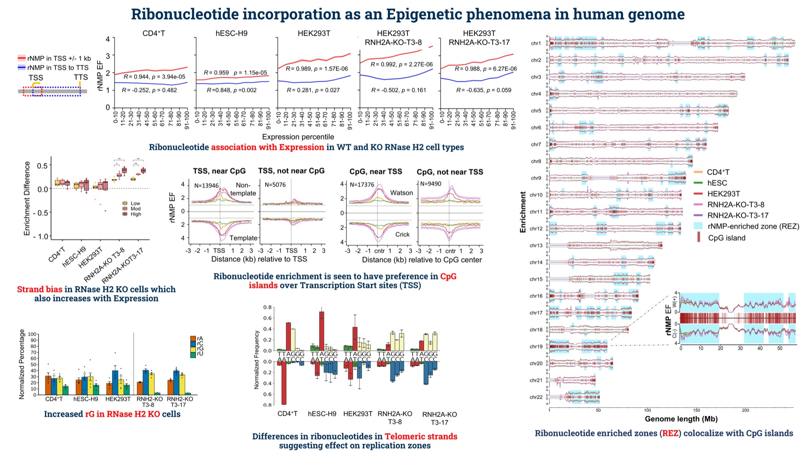
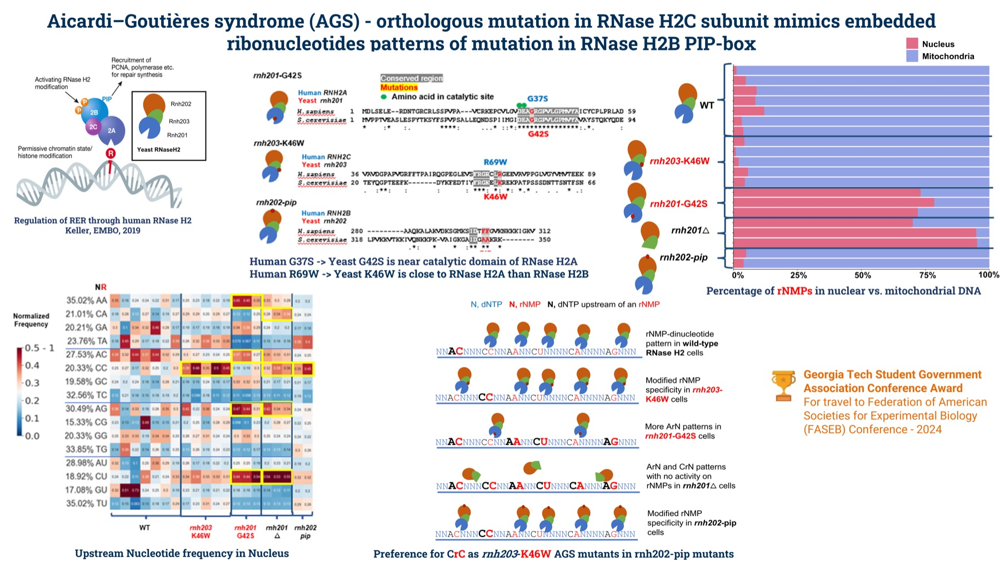
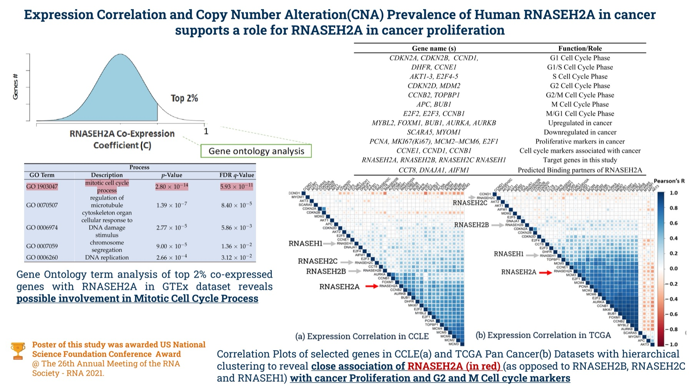
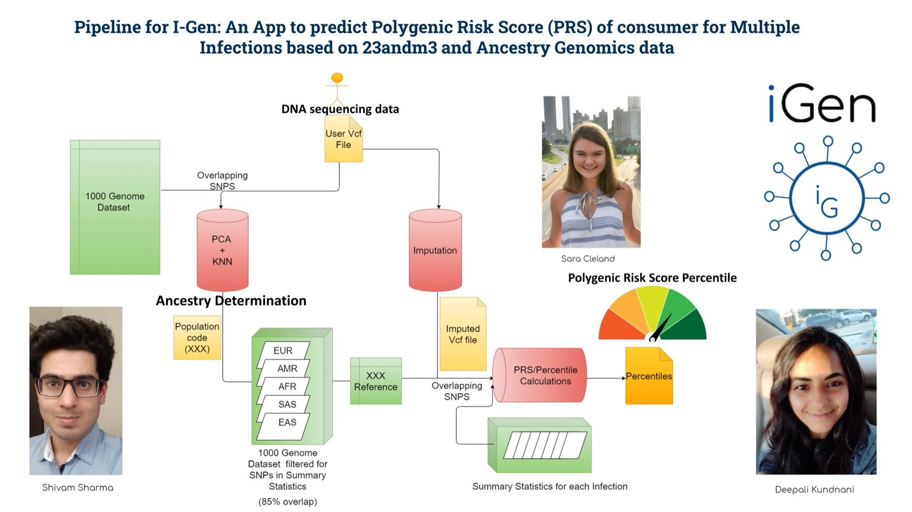

Five projects spanning epigenomics, rare genetic disease, cancer genomics, and clinical
modelling — each one starting from a dataset and a question that would not let go.

Epigenomics · 2025
Ribonucleotide enrichment features in the human genome
Mapping where single embedded ribonucleotides land across human cell types — and what they track with.

Rare disease · 2024
Ribonucleotide features in Aicardi-Goutières syndrome mutants
Two disease-linked mutations, engineered into yeast, show that enzyme structure changes where ribonucleotides land — not just how many.

Cancer genomics · 2021
RNASEH2A associations across cancer datasets
Correlating RNASEH2A expression with proliferation and cell-cycle markers across large cancer cell line and tissue datasets.

Application · 2020
IGen — a web app for infection susceptibility
Turning a consumer DNA test into an actionable read on genetic susceptibility to multiple infections.
Clinical modelling · 2020
Methylation-based survival risk in an HIV cohort
Differentially methylated regions as candidate prognostic markers in Yale's Veterans Aging Cohort Study.
1 / 5
Use the arrows or arrow keys to browse · click a figure to view it full size
Project detail
The same projects, with the full story behind each figure.
Epigenomics · 2025
Ribonucleotide enrichment features in the human genome
View full size
A study of ribonucleotide embedment across human CD4+ T cells derived from patient blood,
a lab-grown stem cell line (hESC-H9), and embryonic kidney cells (HEK293T) — the last
of these with and without the RNase H2 enzyme.
We found that single embedded ribonucleotides (rNMPs) are enriched near CpG islands and are
associated with gene expression and methylation around transcription start sites. We also
observed a gene template versus non-template strand bias in the RNase H2 knockout that is
absent in wild-type cells, consistent with removal of rG on the non-template strand, possibly
by the Top1 enzyme.
Related paper (in preparation)
Rare disease · 2024
Ribonucleotide features in Aicardi-Goutières syndrome mutants
View full size
Two mutant orthologs of human AGS — RNaseH2A-G37S and RNaseH2C-R69W — were
experimentally created in yeast as rnh201-G42S and rnh203-K46W respectively.
The RNaseH2A mutant strongly reduces enzyme activity, causing a substantial ribonucleotide
increase in the nuclear genome, concentrated on the leading strand of autonomously replicating
sequences. The RNase H2C mutant showed no significant nuclear increase, but the sites
of ribonucleotide embedment changed — suggesting a structural effect on the enzyme that
shifts its specificity rather than its throughput.
Determining the expression correlation of RNASEH2A with cancer proliferation and cell-cycle
markers across large cancer cell line and tissue datasets, spanning 35+ cancer types.
This work became part of a
paper published in
MDPI's Biology, and received a US National Science Foundation Conference Award for a
poster presentation at the RNA 2021 Conference.
IGen helps a consumer understand their genetic tendency toward susceptibility to multiple
infections, so they can be proactive about their health — built during a global pandemic,
when that question suddenly mattered to everyone.
All the app needs is a DNA sequencing result from a consumer service such as 23andMe.
Discovery of differentially methylated regions in smokers versus non-smokers validated findings
from several other research groups, and we saw variation in methylation status by race.
For prognosis prediction on the
VACS dataset
we used the
Veterans
Aging Cohort Study (VACS) Index. Support vector machines gave the best accuracy. More lenient
thresholding would extract additional features, and likely push the AUC high enough for these
methylated regions to serve as biomarkers or predictors.